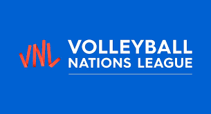

La Superliga es la principal liga masculina de voleibol de Brasil y está considerada una de las más competitivas del mundo. Cuenta con los mejores equipos del país, como el Sada Cruzeiro, el EMS Taubaté Funvic y el Minas Tênis Clube.
La Serie A de la Superliga Brasilera de Voleibol Masculino es la máxima división del campeonato nacional de Brasil de voleibol masculino. En 2011 toma la actual denominación de Serie A tras la creación de la Serie B como segunda división.
La Superliga femenina es la principal liga de voleibol femenino de Brasil. Al igual que la versión masculina, ésta atrae a los mejores talentos del país. Equipos como Osasco São Cristóvão Saúde, Dentil Praia Clube e Itambé/Minas están entre los más fuertes de la competición.
La Serie A1 es la gran liga de voleibol masculino y femenino de Italia. Los clubes italianos tienen tradición en este deporte y son conocidos por su calidad técnica. Clubes como Itas Trentino, Cucine Lube Civitanova e Imoco Volley Conegliano destacan en la competición.
La Liga Superior de Voleibol Masculino, conocida como LVS, es el principal campeonato de voleibol masculino de Argentina. Equipos como Bolívar Vóley, Ciudad Vóley y Obras de San Juan compiten a un alto nivel en la competición.
La V-League es la liga profesional de voleibol masculino y femenino de Corea del Sur. Los clubes surcoreanos son conocidos por su organización y por atraer a destacados jugadores extranjeros. Heungkuk Life Pink Spiders y Hyundai Capital Skywalkers son equipos populares en la liga femenina, mientras que los clubes del ejército coreano, como los Korean Air Jumbos, destacan en la liga masculina.
La PlusLiga es la principal liga de voleibol de Polonia. El país tiene una gran tradición en este deporte y sus equipos son conocidos por su fuerte juego defensivo y sus habilidades técnicas. Zaksa Kędzierzyn-Koźle, Jastrzębski Węgiel y Asseco Resovia Rzeszów figuran entre los más fuertes de la competición. Por último, señalamos que estas son solo algunas de las mayores ligas nacionales de voleibol de todo el mundo. También hay otras ligas destacadas, como la Liga A de voleibol francesa, la Liga de voleibol rusa y la Liga de voleibol japonesa, que tienen sus propias tradiciones y equipos de alto nivel.
